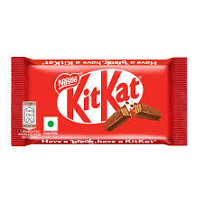
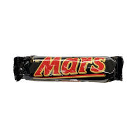
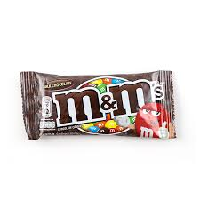
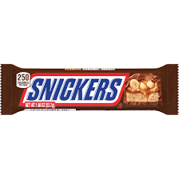
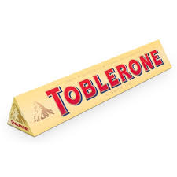
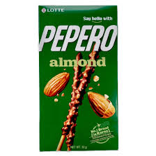
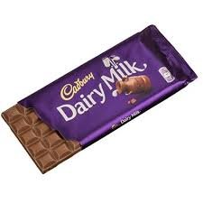
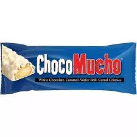
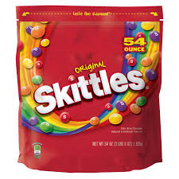
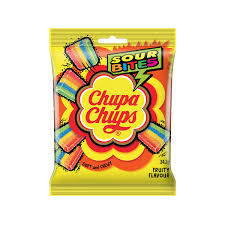

|

kitkat
Size Options: Common sizes include 2-finger (18g), 4-finger (41.5g), Chunky (40g)
Ingredients (Classic KitKat Milk Chocolate): Sugar, wheat flour, cocoa mass, cocoa butter, vegetable fats, skimmed milk powder, lactose, whey powder, butterfat, cocoa solids, and emulsifiers.
KitKat is a globally popular chocolate bar known for its signature crispy wafer layers covered in smooth milk chocolate, offering a satisfying crunch with every bite. Available in various sizes and flavors, it comes in iconic red packaging with the famous slogan, "Have a break, have a KitKat." Whether enjoyed as a quick snack or shared with friends, KitKat remains a favorite treat worldwide, constantly introducing new and exciting flavors.
|

Mars
Size Options: Single (51g), King Size (70g)
Ingredients (Classic Mars Bar): Sugar, glucose syrup, skimmed milk powder, cocoa butter, cocoa mass, vegetable fat, lactose, whey powder, barley malt extract, egg white powder, and emulsifiers.
Mars is a classic chocolate bar made with a soft nougat and creamy caramel center, coated in smooth milk chocolate for a rich and satisfying taste. Packaged in its iconic black wrapper with bold red and gold lettering, it has been a beloved treat for chocolate lovers worldwide. Whether enjoyed as an energy-boosting snack or an indulgent dessert, Mars continues to be a go-to choice for those craving a sweet and chewy chocolate experience.
|

M&M's
Size Options: Common sizes include Single Pack (45g), Sharing Size (90g-100g), and Party Size (200g-400g).
Ingredients (Classic M&M’s Milk Chocolate): Sugar, cocoa mass, cocoa butter, skimmed milk powder, lactose, starch, palm fat, glucose syrup, colors (e.g., Red 40, Yellow 5, Blue 1), emulsifiers, and artificial flavors.
M&M’s are colorful candy-coated chocolates known for their crunchy shell and melt-in-your-mouth milk chocolate center, making them a fun and delicious snack. Available in various flavors like peanut, crispy, caramel, and dark chocolate, they come in their signature bright packaging with the famous "M" printed on each candy. Whether eaten straight from the bag, mixed into desserts, or used as toppings, M&M’s remain one of the most iconic and beloved chocolate treats worldwide.
|

Snickers
Size Options: Common sizes include Single (50g), King Size (75g),
Ingredients (Classic Snickers Bar): Sugar, peanuts, glucose syrup, cocoa butter, skimmed milk powder, cocoa mass, lactose, whey powder, palm oil, sunflower oil, salt, and emulsifiers.
Snickers is a rich and satisfying chocolate bar made with layers of nougat, caramel, and crunchy peanuts, all coated in smooth milk chocolate. Packaged in its signature brown wrapper with bold yellow branding, it is known for its filling and energy-boosting qualities, often promoted with the slogan "You're not you when you're hungry." Whether enjoyed as a quick snack or a post-workout treat, Snickers remains a global favorite, loved for its perfect balance of sweetness, crunch, and chewiness.
|

Toblerone
Size Options: Common sizes include Single (35g, 50g, 100g), King Size (200g, 360g), and Giant (4.5kg)
Ingredients (Classic Toblerone Milk Chocolate): Sugar, milk powder, cocoa butter, cocoa mass, honey, almonds, emulsifier (soy lecithin), and egg white.
Toblerone is a premium Swiss chocolate bar known for its distinctive triangular shape, inspired by the Matterhorn mountain, and its smooth blend of milk chocolate, honey, and almond nougat. Packaged in its iconic yellow or other color-coded wrappers for different flavors, it has become a symbol of high-quality European chocolate. Whether enjoyed piece by piece or gifted as a luxurious treat, Toblerone remains a favorite for its unique texture, rich flavor, and elegant presentation.
|
|

Pepero
Size Options: Common sizes include Standard Box (32g, 39g, 47g, 54g), Family Pack, and Gift Packs.
Ingredients (Classic Pepero Almond Chocolate): Wheat flour, sugar, cocoa mass, cocoa butter, vegetable oils, milk powder, almonds, emulsifier, salt, yeast, and artificial flavors.
Pepero is a popular South Korean snack made of crispy biscuit sticks dipped in delicious chocolate coatings, available in various flavors such as almond, white cookie, and strawberry. Packaged in vibrant boxes, Pepero is widely enjoyed as a fun and light snack, especially during Pepero Day (November 11th), a Korean tradition similar to Valentine’s Day. Whether eaten alone or shared with friends, Pepero remains a beloved treat known for its satisfying crunch and sweet chocolate coating.
|

DairyMilk
Size Options: Common sizes include Small (30g, 45g), Regular (90g, 165g), and Family Size (200g-300g).
Ingredients (Classic Dairy Milk Chocolate): Sugar, milk solids, cocoa butter, cocoa mass, emulsifiers, and artificial flavors.
Cadbury Dairy Milk is a rich and creamy chocolate bar made with high-quality milk, giving it a smooth and melt-in-your-mouth texture. Recognizable by its iconic purple packaging, it comes in a variety of flavors, from classic milk chocolate to fruit and nut, caramel, and Oreo-filled versions. Whether enjoyed as a personal treat or shared with loved ones, Dairy Milk remains one of the most beloved chocolates worldwide, known for its indulgent taste and comforting sweetness.
|

Chocomucho
Size Options: Common sizes include Single (32g, 40g), King Size (50g+).
Ingredients (Classic Choco Mucho Milk Chocolate): Sugar, wheat flour, vegetable oil, cocoa powder, skimmed milk powder, glucose syrup, caramel, nuts, and emulsifiers.
Choco Mucho is a delicious Filipino chocolate snack bar made with crunchy wafer layers, gooey caramel, and crispy rice, all coated in smooth chocolate. Known for its satisfying mix of textures and flavors, it is a go-to snack for those craving a sweet, crunchy, and chewy treat. Whether enjoyed in its classic milk chocolate form or in variants like dark, white, or peanut butter, Choco Mucho remains a popular choice among chocolate lovers in the Philippines.
|

Skittles
Size Options: Common sizes include Single Pack (45g), Sharing Size (90g-100g).
Ingredients (Classic Skittles Original): Sugar, corn syrup, hydrogenated palm kernel oil, citric acid, modified corn starch, natural and artificial flavors, coloring agents (such as Red 40, Yellow 5, Blue 1), and carnauba wax.
Skittles are colorful, chewy fruit-flavored candies known for their vibrant appearance and bold, juicy taste. Packaged in their signature red pouch, Skittles invite you to "Taste the Rainbow" with a variety of flavors, including Original, Sour, and Wild Berry. Loved by candy enthusiasts worldwide, Skittles offer a fun, sweet, and tangy experience in every bite.
|

Chupachups
Size Options: Common sizes include Mini (6g), Regular (12g), and Large (15g+).
Ingredients (Classic Chupa Chups Fruit Flavors): Sugar, glucose syrup, citric acid, natural and artificial flavors, fruit juice concentrate, coloring agents (such as Red 40, Yellow 5, Blue 1), and emulsifiers.
Chupa Chups is a globally recognized lollipop brand known for its wide range of flavors, from fruity to creamy and even fizzy cola. Wrapped in colorful packaging with the iconic Chupa Chups logo designed by Salvador Dalí, these lollipops are a nostalgic treat enjoyed by both kids and adults. Whether you prefer the classic fruit flavors, creamy varieties, or bubble gum-filled versions, Chupa Chups delivers a fun and flavorful candy experience.
|